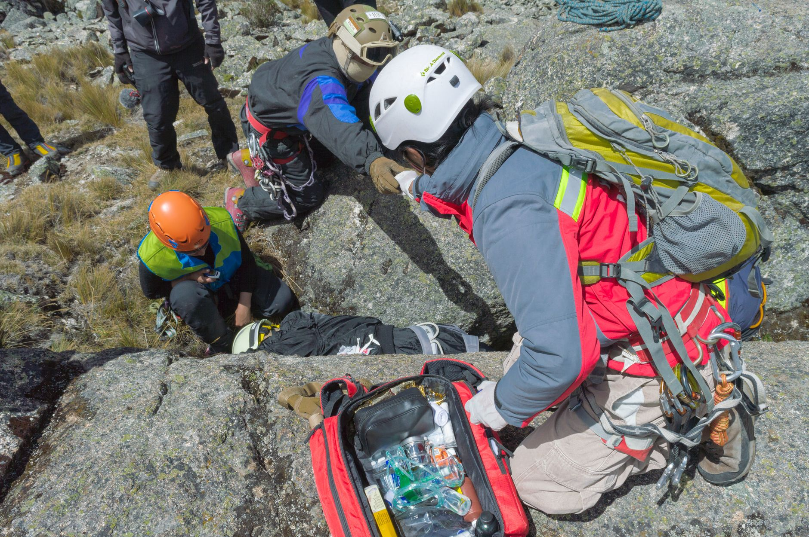

The scale of the disappearance
The news of 33 British nationals going missing in Nepal has triggered an emergency response of unprecedented scale. Reports indicate that the individuals were part of various trekking and travel groups when they lost contact with their families and local guides. The sheer number of missing persons has placed an enormous strain on the local Nepalese authorities and international rescue teams.
Early intelligence suggests that the group may have been caught in a localized environmental catastrophe. While the exact nature of the event is still being investigated, the geographical location where they were last seen is known for its volatile weather patterns and treacherous mountain passes. This makes the task of finding them not only a logistical nightmare but a race against time.
Challenges facing rescue teams
Rescue operations in the Himalayan region are notoriously difficult due to the extreme altitude and unpredictable weather. Search teams are currently dealing with several major obstacles that hinder their ability to cover ground quickly. These include heavy cloud cover which prevents aerial reconnaissance and the risk of secondary landslides in the area.
- Unstable terrain making foot travel dangerous
- Limited communication signals in deep valleys
- Extreme temperature fluctuations between day and night
- Difficulties in deploying helicopter-based search units
The terrain is unforgiving, and every hour that passes without contact increases the complexity of our search mission.
Government and international response
The British government has been working closely with the Nepalese Ministry of Foreign Affairs to coordinate the search. Embassies have been set up to provide support to the families of the missing, offering counseling and regular updates as more information becomes available. There is a high level of diplomatic cooperation aimed at ensuring all available resources are deployed.
Local Nepalese authorities have mobilized military personnel and specialized mountain rescue units to assist in the effort. The government has also issued a temporary advisory for other travelers in the region, suggesting they exercise extreme caution and stay on well-marked trails. This proactive stance is intended to prevent further incidents while the current crisis is managed.
Understanding the environmental context
Nepal is a country that experiences significant geological and meteorological instability. The suddenness of the disappearance of these 33 nationals suggests that the event might have been triggered by a rapid environmental shift. Such events are increasingly common as global weather patterns become more erratic, leading to sudden floods or landslides in high-altitude zones.
Geologists and meteorologists are looking into recent seismic activity and rainfall data to determine if a specific event caused the disappearance. Understanding whether this was a landslide, a flash flood, or a sudden blizzard is critical for directing the search teams to the most likely locations where survivors might be found or where debris may have settled.
Safety implications for travelers
This incident serves as a sobering reminder of the inherent risks involved in high-altitude trekking. Travel experts emphasize that while the Himalayas offer unparalleled beauty, they require meticulous planning and respect for local conditions. Relying on experienced guides and maintaining constant communication with base camps are essential safety protocols.
- Always register your trekking route with local authorities
- Carry satellite communication devices in areas without cell service
- Monitor local weather reports daily before departing
- Ensure your travel insurance covers high-altitude rescue operations
Looking back at regional disasters
The current situation in Nepal is not an isolated case of environmental danger in the region. History has shown that the intersection of geography and weather can lead to devastating outcomes for travelers and locals alike. Examining past events can help provide context for why these mountain regions are so vulnerable to sudden changes.
For a deeper understanding of how environmental factors impact this specific region, you may want to read our previous analysis on Tracing the Deadly Nepal-Tibet Flash Flood Disaster at https://dhyey.bond/blog/tracing-the-deadly-nepal-tibet-flash-flood-disaster/. Understanding these historical patterns is vital for anyone looking to comprehend the ongoing risks in the Himalayan corridor.
See Also
If you enjoyed this Current Events article, check out Tracing the Deadly Nepal-Tibet Flash Flood Disaster for more useful reading.